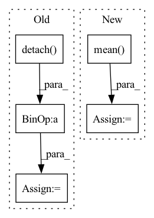

Pattern ID :17086
Before Change
breakpoint()
warped_imgs = homography_warp(img_batch, homography, ref_batch.shape[-2:])
// Compute new PSNR:
mse_per_example = ((warped_imgs.detach() - ref_batch)** 2).view(B, -1).mean(dim=1)
registered_psnrs = 10 * torch.log10(factor**2 / mse_per_example)
// Return best of default and warped PSNR:
return torch.stack([default_psnrs, registered_psnrs]).max(dim=0)[0].mean()After Change
// If only this was parallelized, todo ...
for img, ref in zip(img_batch.detach(), ref_batch.detach()):
img, ref = img[None, ...], ref[None, ...]
mse = ((img - ref)**2).mean()
default_psnrs += [10 * torch.log10(factor**2 / mse)]
// Align by homography:
registrator = ImageRegistrator("similarity", num_iterations=2500)
registrator.warper = partial(HomographyWarper, padding_mode="reflection")In pattern: SUPERPATTERN
Frequency: 3
Non-data size: 5
Instances Fragment ID: 57225832
Project Name: jonasgeiping/breaching
Commit Name: 6b4ffc1d9faebf9b2f809f69b0ed4a9af670db47
Time: 2021-11-29
Author: jonas.geiping@googlemail.com
File Name: breaching/analysis/metrics.py
M Class Name: AnonimousClass
N Class Name: AnonimousClass
M Method Name: _registered_psnr_compute_kornia(3)
N Method Name: _registered_psnr_compute_kornia(3)
M Parent Class:
N Parent Class:
M File Name: breaching/analysis/metrics.py
N File Name: breaching/analysis/metrics.py
M Start Line: 80
M End Line: 94
N Start Line: 81
N End Line: 99
Before Change
fishers = []
for activation in activations:
fish = (
(int.data.detach() * int.grad.detach() )
.sum(-1)
.sum(-1)
.pow(2)After Change
for activation in activations:
print(activation)
fish = (
(activation.data.detach() * activation.grad.detach())
.sum(-1)
.sum(-1)
.pow(2)
.mean( 0)
.sum()
)
fishers.append(fish)
Fragment ID: 57225688
Project Name: jack-willturner/gymnastics
Commit Name: e3d570be27603ff985b0d572e52a75401749f7c0
Time: 2021-08-10
Author: jackwilliamturner@icloud.com
File Name: gymnastics/proxies/fisher.py
M Class Name: Fisher
N Class Name: Fisher
M Method Name: score(4)
N Method Name: score(4)
M Parent Class: Proxy
N Parent Class: Proxy
M File Name: gymnastics/proxies/fisher.py
N File Name: gymnastics/proxies/fisher.py
M Start Line: 24
M End Line: 31
N Start Line: 23
N End Line: 32
Before Change
Z_batch = torch.mean(acc)
Z_sum = torch.sum(acc).detach()
else:
Z_sum = Z_sum + torch.sum(acc).detach()
n = n + num_samples
dec = torch.rand_like(acc) < acc
for j, dec_ in enumerate(dec):
if dec_ or t == self.T - 1:After Change
if self.training or self.Z == None:
eps = torch.randn((num_samples, self.d), dtype=self.loc.dtype, device=self.loc.device)
z_ = self.loc + torch.exp(self.log_scale) * eps
Z_batch = torch.mean( self.a(z_))
if self.Z == None:
self.Z = Z_batch
else:
self.Z = ((1 - self.eps) * self.Z + self.eps * Z_batch).detach() Fragment ID: 57225775
Project Name: vincentstimper/normalizing-flows
Commit Name: 7d58159119f4ea9785682b1726a8243124c84c04
Time: 2020-08-18
Author: vincent.stimper@gmail.com
File Name: normflow/distributions.py
M Class Name: ResampledGaussian
N Class Name: ResampledGaussian
M Method Name: forward(2)
N Method Name: forward(2)
M Parent Class: BaseDistribution
N Parent Class: BaseDistribution
M File Name: normflow/distributions.py
N File Name: normflow/distributions.py
M Start Line: 91
M End Line: 125
N Start Line: 93
N End Line: 129